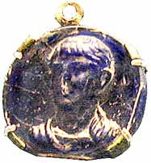
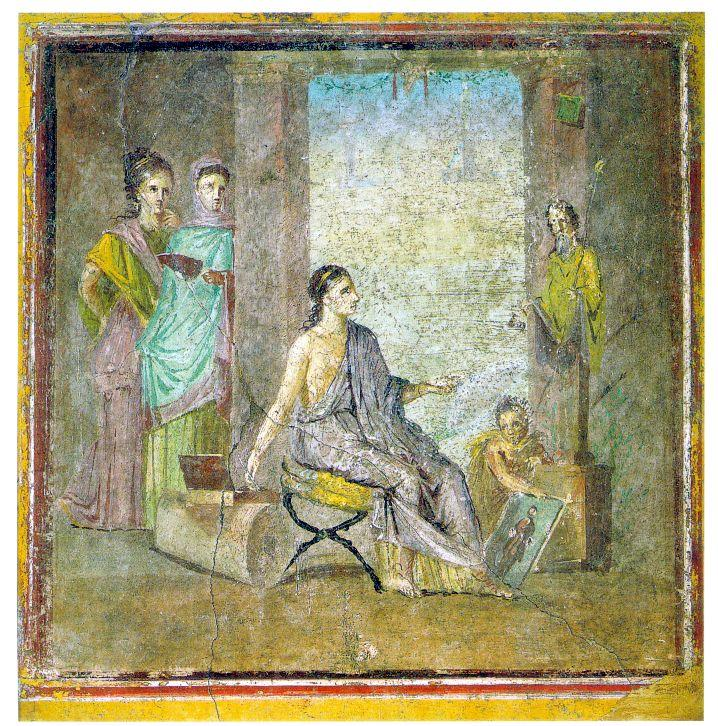
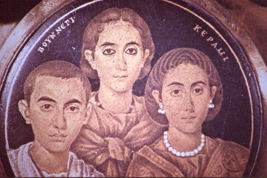
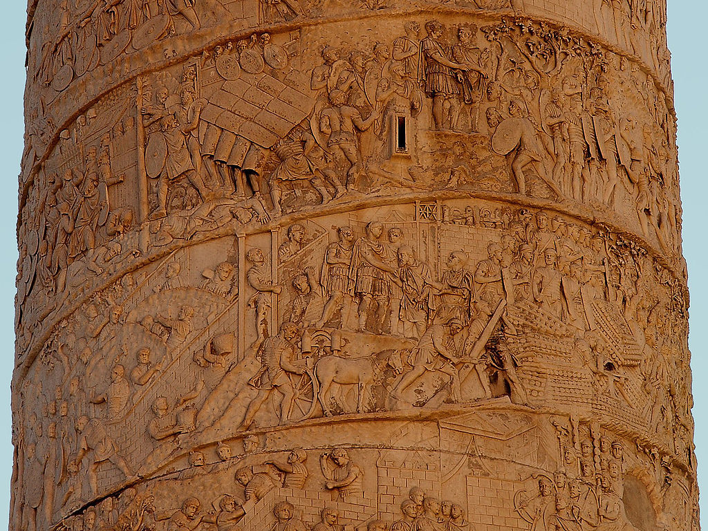
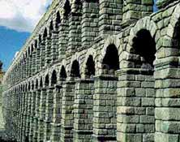
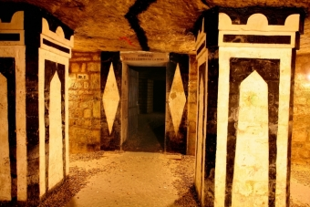

Roma..The City Of Love & Lights
Art & Architecture of Rome
The Romans developed or improved their art by copying the art from the Greeks for the statues. Statues were made from clay or marble. Metal was sometimes added to the statues so that they had added strength. Statues were well made, were nude and they were made of gods or important leaders which were recognised . The fact that the statues had important people meant that they had to be done as well as possible since it was honouring their gods.Paintings and mosaics were important too as they were used to advertise or to show everyday life scenes. These were made in local colours which were found in the stone, plants and any other source of colour. one example of this is in the Roman town of Pompeii. These paintings usualy showed scenes of everyday life in the countryside.
Mosaics are said to have come from the city of Babylon and that since the Romans found great beauty decided to copy it, adding it to buildings etc. There are different styles of mosaics and there is a name for each style. These names are opus sectile which is a name given to mosaics made with geometric shapes of stone put in a certain way to make a shape of the desired look. There is also opus tessellatum which are like dice. Square in shape and are all of the same shape so these were used mostly on floors. There is a more complex styles which is called Opus vermiculatum where the square stones are of varying sizes. Mosaics are usually made up of tiny stones which are painted. When they are placed in a certain way they make scenes from everyday life like paintings or photos do now.
Roman Art
Roman art refers to the visual arts made in Ancient Rome and in the territories of the Roman Empire. Roman art includes architecture, painting, sculpture and mosaic work. Luxury objects in metal-work, gem engraving, ivory carvings, and glass, are sometimes considered in modern terms to be minor forms of Roman art,although this would not necessarily have been the case for contemporaries. Sculpture was perhaps considered as the highest form of art by Romans, but figure painting was also very highly regarded. The two forms have had very contrasting rates of survival, with a very large body of sculpture surviving from about the 1st century BC onwards, though very little from before, but very little painting at all remains,and probably nothing that a contemporary would have considered to be of the highest quality.

Paintings - In A.D. 79, an eruption of the volcano Vesuvius destroyed the city of Pompeii, covering it with layers of lava that hardened into rock.
The wall paintings preserved in this rock tell us nearly everything we know about Roman painting.Painting was usually done as
a form of decoration. In Pompeii, for example, paintings were executed on the inside walls of the houses in
fresco (painting on wet plaster). Often these murals were used to make the room seem larger, by giving the illusion of depth,
or to create a pastoral landscape where there was no window or view.Columns and other forms of architecture were often
painted into the compositions or used to frame the murals and add to the feeling of depth. A system of perspective was
known and used by the Romans. Red, black, and cream-white were among the most popular colors.Roman painting achieved a
high degree of naturalism through the artists' understanding of perspective and use of light and shade. The Romans painted
many charming scenes from nature and portraits of children and beautiful young men and women.
Portraits:Pliny complained of the declining state of Roman portrait art,
"The painting of portraits which used to transmit through the ages the accurate likenesses of people, has entirely gone out
Indolence has destroyed the arts.In Greece and Rome, wall painting was not considered as high art. Unfortunately, since wood is a
perishable material, only a very few examples of such paintings have survived, namely the Severan Tondo from c. 200 AD,
a very routine official portrait from some provincial government office, and the well-known Fayum mummy portraits,
all from Roman Egypt, and almost certainly not of the highest contemporary quality.
Gold glass:Gold glass, or gold sandwich glass, was
a technique for fixing a layer of gold leaf with a design between two fused layers of glass, developed in Hellenistic glass and
revived in the 3rd century. There are a very fewer larger designs, including a very fine group of portraits from the 3rd century
with added paint, but the great majority of the around 500 survivals are roundels that are the cut-off bottoms of wine cups or
glasses used to mark and decorate graves in the Catacombs of Rome by pressing them into the mortar.

Sculpture - The Romans used a great deal of sculpted decoration to embellish their architecture.
Columns were often placed on the walls of buildings as part of the decoration.Many of these decorations were copied from
Greek styles. In fact, many Greek forms were simply placed on the facades of Roman buildings without any practical reason
for being there.In portraying their gods, the Greeks had been influenced by their ideas of form and beauty.
Roman sculptors were greatly influenced by the Greeks. But the Romans showed their skill and originality in their portraits.
They portrayed their emperors, generals, and senators with a degree of realism unknown to the Greeks. Thinning hair, double chins,
crooked noses--all the physical traits that make one person look different from another--can be found in Roman portraiture.Early
Roman art was influenced by the art of Greece and that of the neighbouring Etruscans,
themselves greatly influenced by their Greek trading partners.
An Etruscan speciality was near life size tomb effigies in
terracotta, usually lying on top of a sarcophagus lid propped up on one elbow in the pose of a diner in that period. As the
expanding Roman Republic began to conquer Greek territory, at first in Southern Italy and then the entire Hellenistic world
except for the Parthian far east, official and patrician sculpture became largely an extension of the Hellenistic style, from
which specifically Roman elements are hard to disentangle, especially as so much Greek sculpture survives only in copies of the
Roman period. By the 2nd century BCE, "most of the sculptors working in Rome" were Greek,often enslaved in conquests such
as that of Corinth (146 BCE), and sculptors continued to be mostly Greeks, often slaves, whose names are very rarely recorded.
Vast numbers of Greek statues were imported to Rome,whether as booty or the result of extortion or commerce, and temples were
often decorated with re-used Greek works.
 Minor arts - The Romans inherited a tradition of art in a wide range of the so-called "minor arts" or decorative art.
Most of these flourished most impressively at the luxury level, but large numbers of terracotta figurines, both religious and secular,
continued to be produced cheaply, as well as some larger Campana reliefs in terracotta. Roman art did not use vase-painting in the
way of the ancient Greeks, but vessels in Ancient Roman pottery were often stylishly decorated in moulded relief.
Producers of the millions of small oil lamps sold seem to have relied on attractive decoration to beat competitors and
every subject of Roman art except landscape and portraiture is found on them in miniature.
Minor arts - The Romans inherited a tradition of art in a wide range of the so-called "minor arts" or decorative art.
Most of these flourished most impressively at the luxury level, but large numbers of terracotta figurines, both religious and secular,
continued to be produced cheaply, as well as some larger Campana reliefs in terracotta. Roman art did not use vase-painting in the
way of the ancient Greeks, but vessels in Ancient Roman pottery were often stylishly decorated in moulded relief.
Producers of the millions of small oil lamps sold seem to have relied on attractive decoration to beat competitors and
every subject of Roman art except landscape and portraiture is found on them in miniature.
 Coins and medals - Few Roman coins reach the artistic peaks of the best Greek coins, but they survive in vast
numbers and their iconography and inscriptions form a crucial source for the study of Roman history, and the development of
imperial iconography, as well as containing many fine examples of portraiture. They penetrated to the rural population of the
whole Empire and beyond, with barbarians on the fringes of the Empire making their own copies. In the Empire medallions in
precious metals began to be produced in small editions as imperial gifts, which are similar to coins, though larger and usually
finer in execution. Images in coins initially followed Greek styles, with gods and symbols, but in the death throes of the
Republic first Pompey and then Julius Caesar appeared on coins, and portraits of the emperor or members of his family became
standard on imperial coinage.The inscriptions were used for propaganda, and in the later Empire the army joined the emperor as the beneficiary.
Coins and medals - Few Roman coins reach the artistic peaks of the best Greek coins, but they survive in vast
numbers and their iconography and inscriptions form a crucial source for the study of Roman history, and the development of
imperial iconography, as well as containing many fine examples of portraiture. They penetrated to the rural population of the
whole Empire and beyond, with barbarians on the fringes of the Empire making their own copies. In the Empire medallions in
precious metals began to be produced in small editions as imperial gifts, which are similar to coins, though larger and usually
finer in execution. Images in coins initially followed Greek styles, with gods and symbols, but in the death throes of the
Republic first Pompey and then Julius Caesar appeared on coins, and portraits of the emperor or members of his family became
standard on imperial coinage.The inscriptions were used for propaganda, and in the later Empire the army joined the emperor as the beneficiary.
Architecture

Aqueducts - The Romans needed a way to get water in and out of the city, since they had so many people living
so close together and Rome was so big. The Romans used the arch a lot. The arch was regarded very highly because it was seen
as somewhat divine since it had a curved top that never fell in and was very sturdy.The word aqueduct comes from the Latin words aqua - water, and ductum -led.
Indeed it is a channel by which water is led from its source to the user. Most aqueducts ran underground. However, if it became
necessary to cross a valley or river, the aqueduct was elevated on a bridge of stone arches that enabled the water flow at a constant rate.
Depending on the topography, an aqueduct may have had to be constructed with multiple tiers of arches.Not only were these structures functional, they were very impressive.
The most photographed aqueduct today is the Pont du Gard, 25 miles from Nimes.
There are basically three types of aqueducts: masonry conduits, lead pipes, and earthenware pipes.
The most common in Rome were masonry conduits. The nucleus of the masonry aqueduct was the specus, or the water channel. The specus was about the size of our
present day doorway. The specus always had stone walls, stone floors, and a stone roof regardless if it ran underground or was built upon tiers.
The specus was always covered. The purpose of the covering was originally to shield the channel from the sun. However, with the possibility of enemy
intrusion through poisoning the water, the covering later became an important means of defense.

Catacombs - The Catacombs, which form a veritable labyrinth beneath the very heart of Paris, were created in the
galleries of the former quarries whose stone was used to build the capital.Situated twenty metres below ground, the ossuary
contains the remains of approximately six million Parisians, transferred there gradually between the late eighteenth and
mid-nineteenth centuries as graveyards were being closed because of the risk they posed to public health. The first of these
was the cimetière des Innocents graveyard in 1786 in what is now the district of Les Halle.
In the long maze of dark galleries
and narrow passages, visitors can see a tableau of death with bones arranged in a macabre display of high Romantic taste.
The alexandrine verse "Arrête, c'est ici l'empire de la mort" [Halt, this is the realm of Death ] above the entrance to the
ossuary is just one of an extensive series of maxims, poems and other sacred and profane passages giving pause for thought during
the tour. This unusual site movingly brings the history of the Parisian people back to life and takes visitors on a timeless
journey.
 Rome Temples - Ancient Roman temples are among the most visible archaeological remains of Roman culture,
and are a significant source for Roman architecture. Their construction and maintenance was a major part of ancient Roman religion.
The main room (cella) housed the cult image of the deity to whom the temple was dedicated, and often a small altar for incense or
libations.Behind the cella was a room or rooms used by temple attendants for storage of equipment and offerings.
Rome Temples - Ancient Roman temples are among the most visible archaeological remains of Roman culture,
and are a significant source for Roman architecture. Their construction and maintenance was a major part of ancient Roman religion.
The main room (cella) housed the cult image of the deity to whom the temple was dedicated, and often a small altar for incense or
libations.Behind the cella was a room or rooms used by temple attendants for storage of equipment and offerings.
The Roman temple architecture style was derived from the Etruscan model.
The Etruscans were an indigenous Italian race which was at its peak in the seventh century BC. In turn, the Etruscans had
adopted other styles into their temples, of which Greek architecture was the main influence. Therefore Roman temples were
distinct but also based on both Etruscan and Greek plans.Roman temples emphasised the front of the building, which consisted
of a portico with columns, a pronaos. This departs from the Greek model of having equal emphasis all around the temple, where
it could be viewed and approached from all directions. A caesareum was a temple devoted to Imperial cult. Caesarea were located throughout the Roman Empire.
In the city of Rome, a caesareum was located within the religious precinct of the Arval Brothers. In 1570, it was documented as
still containing nine statues of Roman emperors in architectural niches. These are all lost, but the base for the statue of
Marcus Aurelius survives, and altogether the inscriptions of seven of the nine are recorded in volume 6 of the Corpus
Inscriptionum Latinarum.One of the most prominent of the caesarea was the Caesareum of Alexandria, located on the harbor.
During the 4th century, after the Empire had come under Christian rule, it was converted to a church.
A caesareum was a temple devoted to Imperial cult. Caesarea were located throughout the Roman Empire.
In the city of Rome, a caesareum was located within the religious precinct of the Arval Brothers. In 1570, it was documented as
still containing nine statues of Roman emperors in architectural niches. These are all lost, but the base for the statue of
Marcus Aurelius survives, and altogether the inscriptions of seven of the nine are recorded in volume 6 of the Corpus
Inscriptionum Latinarum.One of the most prominent of the caesarea was the Caesareum of Alexandria, located on the harbor.
During the 4th century, after the Empire had come under Christian rule, it was converted to a church.
- Temple to All The Gods, known as the Pantheon - Campus Martius
- Temple of Bellona (Rome) - Near the Theater of Marcellus
- Temple of Castor and Pollux - In the Roman Forum
- Temple of Hadrian - Campus Martius (Built into Chamber of Commerce building)
- Temple of Janus (Roman Forum)
- Temple of Saturn - West end of the Roman Forum
- Temple of Venus and Roma - Northeast corner of the Roman Forum
- Temple of Peace - Forum of Peace (now mostly covered by Via dei Fori Imperiali)
- Nymphaeum often called (erroneously) a Temple of Minerva Medica, formerly in the Forum Transitorum
- Temple of Veiovis - Capitoline Hill (Basement of Palazzo Senatorio)